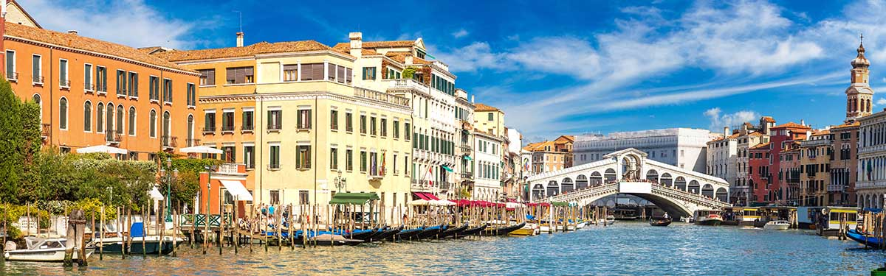

Intro
“Parel van de Adriatische Zee” ,100 kleine eilanden , ve150 kanalenenmeer dan 400 bruggen . Wat Venetië zo bij
Met zijn rijke geschiedenis als een machtige maritieme republiek was Venetië eeuwenlang een belangrijk centrum voor handel, cultuur en kunst. Vandaag staat de dag de stad bekend om haar prachtige pleinen, indrukwekkende paleizen, sfeervolle straatjes en iconische gondeltochten. Hoogtepunten zoals het San Marcoplein , de BasilBasiliek van San Marco , hetDogenpaleis , en deRialtobrugboom
bezienswaardigheden
kunst en cultuur
Mode en Design
San Marcoplein (Piazza San Marco)
Het hart van Venetië en een van de beroemdste pleinen ter wereld.
Het hoogtepunten van Venetië is De Basiliek van San Marco, de Campanile (klokkentoren), de Torre dell'Orologio (klokkentoren) en de gezellige terrasjes.
Groot Kanaal
- Waarom bezoeken : De belangrijkste waterweg van Venetië, omzoomd door historische paleizen.
Hoogtepunten : Geniet van een gondeltocht of een rit met een vaporetto (waterbus) langs het kanaal.
Brug der Zuchten (Ponte dei Sospiri)
Een iconische brug die gevangen het laatste uitzicht op de stad bood voordat ze naar hun cel werden gebracht.
Tip : Bekijk de brug vanaf de buitenkant of tijdens een tour in het Hondenpaleis.